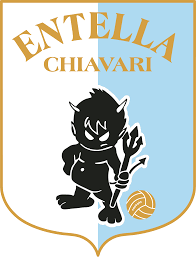

Virtus Entella

La Virtus Entella, nota semplicemente come Entella, è una società calcistica italiana di Chiavari (GE). Milita in Serie C, la terza divisione del campionato italiano di calcio. Per la stagione 2025-2026 ha acquisito il diritto a militare in Serie B.
La squadra è tra le prime cento in Italia per tradizione sportiva, avendo preso parte per 69 volte a campionati organizzati su base nazionale e raggiunto quale apice sportivo il secondo livello del campionato italiano di calcio: la prima volta nel 1922 e successivamente nel 2014, quando esordì in Serie B in concomitanza al compimento del secolo di vita[6], prendendovi parte per 6 stagioni complessive.
Fondata nel 1914 come Entella Foot-Ball Club traendo il nome dall'omonimo fiume, adottò la maglia biancoceleste a strisce verticali sin dal suo primo incontro, sostituendola con una nera con scudo biancoceleste tra il 1920 e il 1963 e con una verde unicamente nella stagione 2002-2003, la prima disputata dopo la revoca dell'affiliazione alla Federazione Italiana Giuoco Calcio avvenuta nel 2001. Il sodalizio ha mutato più volte la propria denominazione anche in seguito a fusioni societarie ed ha assunto quella l'attuale nel 2005. I Diavoli neri - come sono soprannominati dal 1930 - disputano le proprie partite interne allo stadio comunale, che li ospita dal 1935 ed è attualmente omologato per 5 587 spettatori.
I maggiori successi raggiunti dal club sono le tre vittorie ottenute nel campionato di terzo livello: in Lega Pro Prima Divisione 2013-2014, Serie C 2018-2019 e Serie C 2024-2025 . Vanta inoltre anche una Supercoppa Serie C ottenuta nell’edizione 2025. In precedenza la squadra ottenne anche la vittoria nei campionati di Serie D 1959-1960 e 1963-1964, oltre che nel Campionato Interregionale 1957-1958 e 1984-1985